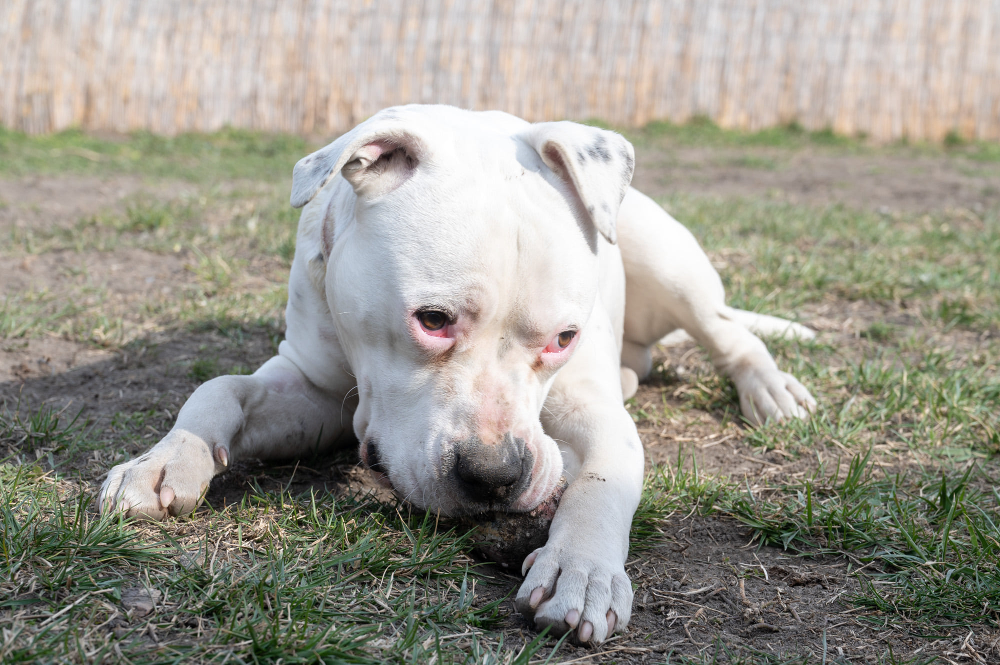

Madzag
Itt van ez a kis túlélő, egy igazi herceg, Madzaag! Nevét a megtalálásakor, nyakába kötött, majdnem halálát okozó zsinegről kapta. De mindez már a múlt! Egy hét leforgása alatt hatalmas változásokon ment keresztül! Erős a gyanúnk, hogy valamikor ő nagyon jó helyen volt, annak ellenére, hogy mentésekor sajnos nem volt benne chip...